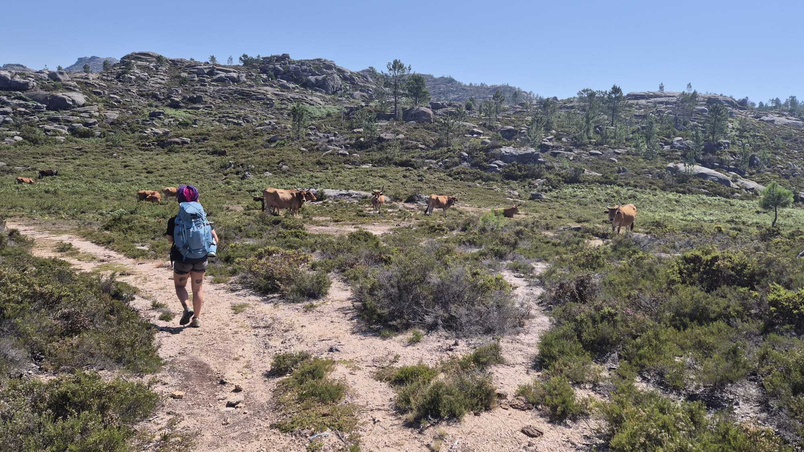

Technology and organizations
How do digital technologies shape the ways communities organize and make decisions—and how do communities, in turn, reshape the rules and technologies they use?
PhD student at DDC · University of Southern Denmark
I study participation and organization in socially-oriented decentralized autonomous organizations.
Research, projects, and a little life in between.
I’m a PhD student at SDU’s Digital Democracy Centre, working between the Strategic Organization Design (SOD) and Artificial Intelligence, Cybersecurity and Programming Languages (ACP) sections.
My research looks at decentralized algorithmic governance, specifically with respect to decision-making and community dynamics in socially-oriented blockchain-based communities (i.e., Impact DAOs).
My background is Communication Science (BSc), and I specialized in Digital Humanities (MSc), at the University of Bologna.
Doctoral research
University of Southern Denmark
Digital Democracy Centre
Master’s degree
Digital Humanities
University of Bologna
How do digital technologies shape the ways communities organize and make decisions—and how do communities, in turn, reshape the rules and technologies they use?
How do members’ different beliefs and goals shape collective decision-making, and when do governance arrangements sustain cooperation rather than produce inertia or fragmentation?
How do practices and information circulate within and across community boundaries, and how do relationships and shared cultural references shape the ways they are interpreted?
03 Publications
A reading list of
questions explored.
Conference paper
HICSS 2026 · Accepted
This paper develops a socio-technical framework for understanding decentralized autonomous organizations. Drawing on an umbrella review of 12 prior surveys, it connects technical artefacts, governance logics, and organizational manifestations, making their interdependencies explicit and supporting comparative research on DAO design.
Conference paper
HICSS 2026
Using data from 70 decentralized autonomous organizations and fuzzy-set qualitative comparative analysis, this study examines how combinations of proposal-making and voting practices relate to treasury growth. It identifies multiple governance configurations and a trade-off: successful DAOs tend to emphasize broad participation in either proposal creation or voting, rather than both.
Journal article
Journal of Organization Design · 14 · 239–263
This study maps knowledge exchange between business and economics and computer science in research on decentralized autonomous organizations. Combining citation-network analysis, topic modelling, and publication-outlet analysis, it finds active interdisciplinary exchange but limited theoretical integration, with discussion remaining largely applied and case-driven.
Manuscript
Under submission to Journal of Web Semantics
Working paper
Submitted manuscript
Submitted to Journal of Information Technology and Politics
Working paper
Working paper
Conference contribution
XXIII International Association for the History of Religions World Congress · 25 August 2025
No entries in this category yet.
04 Projects
I maintain the website for the DiO community and its annual conference, keeping event information up to date. I also support online participation, helping colleagues join the conference remotely.
Visit the DiO websiteI am involved in DREAM, an initiative connecting people and institutions working on decentralized autonomous organizations. For me, it is a bridge between international collaborators: a space to exchange perspectives and build connections across disciplines and institutions.
I am developing a collaboration with Gloki and Young World Federalists around civic participation and collective decision-making. The aim is to translate ideas about governance into practical choices about participation rules, onboarding, and how people discuss and develop proposals together.
05 Teaching
Course teaching, tutoring, and assessment.
University of Southern Denmark · 2025–present
I contribute to teaching in the Organization of Innovation course.
Course assessment · 2024–present
I serve as an evaluator for IT Tools, contributing to course assessment.
University of Bologna · 2023–present
I provide tutoring for students taking the Social Network Analysis course.

A little life, too
A place for the things that don’t fit on a CV.
I love traveling (who doesn't?) and especially hiking.
If we become close I will force you to backpack, eventually.
I am slightly hyperactive and do not fear taking up another hobby - even though I definitely shouldn't.
Cronically online. Princess Donut, The Queen Anne Chonk is my spirit animal.
100% a festival girl.
I am an adult in the same way a tomato is a fruit.
06 Curriculum vitae
For a fuller account of my academic background, please get in touch.
Request my CV07 Contact
About research, a possible collaboration,
or a question we might share.
Digital Democracy Centre
University of Southern Denmark